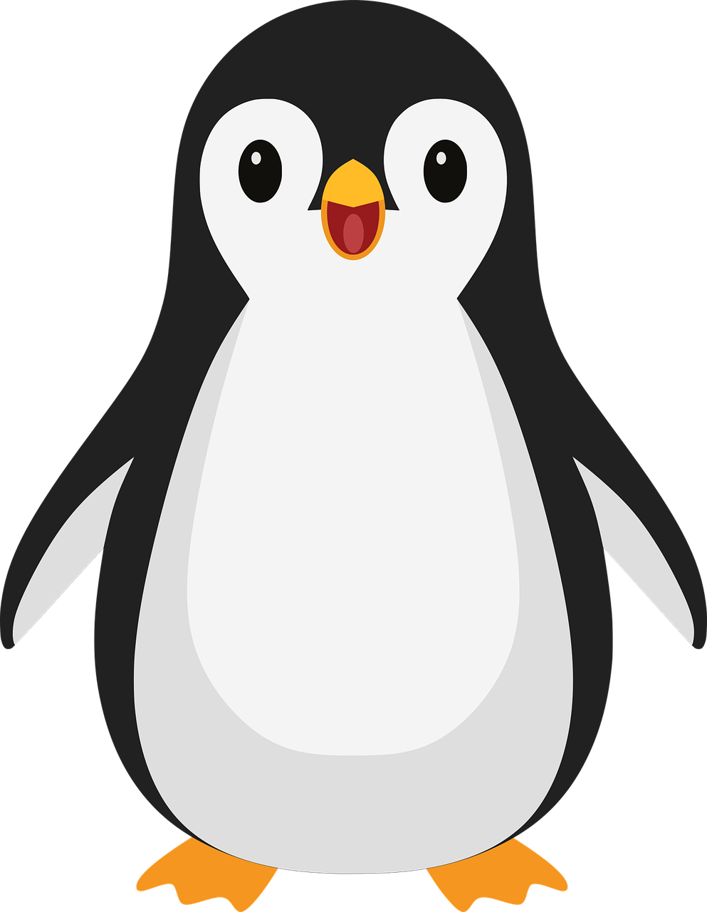

I'm a CS undergrad at Brown University interested in finding new ways to
build projects for myself and for others. With many hours spent coding and
completing assigned tasks, I wanted to take time to understand what makes
a project stand on its own and what the thought process is behind
starting a product from scratch.
As a newcomer to the field of UI/UX, I have learned many new skills in
designing, critiquing and front-end in general. In this portfolio, I have
selected a few major projects that I've completed throughout my learning experience.